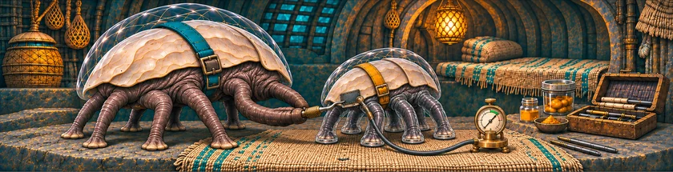
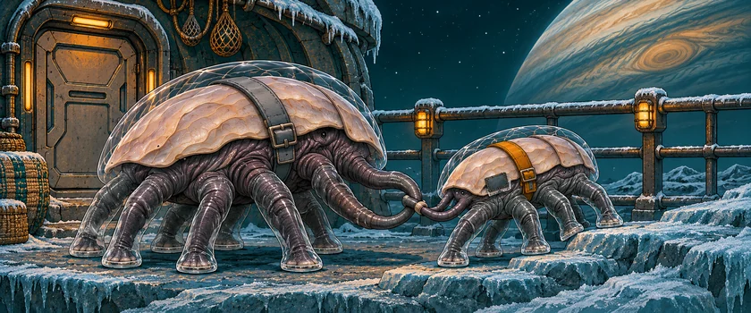
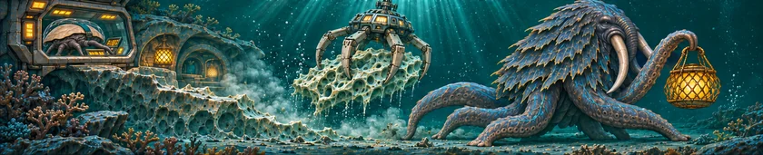

THE ORUUN · FROM ABOVE
A Seal for Home
Siv has one evening at home before the next shift.
For two hundred years, the Dryborn have taken from the first alien people humanity will meet. They could have known.
The Dryborn cut the reefs to power the Reach’s gates. They build the network; they own none of it. Their crews mistake Oruun homes and lamps for wild reef life. An early warning was filed away.



Read the words
“Will you come on my first walk?” Pell asks. A new suit seal will cost Siv two shifts.
The patch holds, and Pell leaves with another carer. Siv goes to work.
Two shifts will buy the new seal. On Siv’s screen, a small light moves under the ice. The log calls it reef glow.